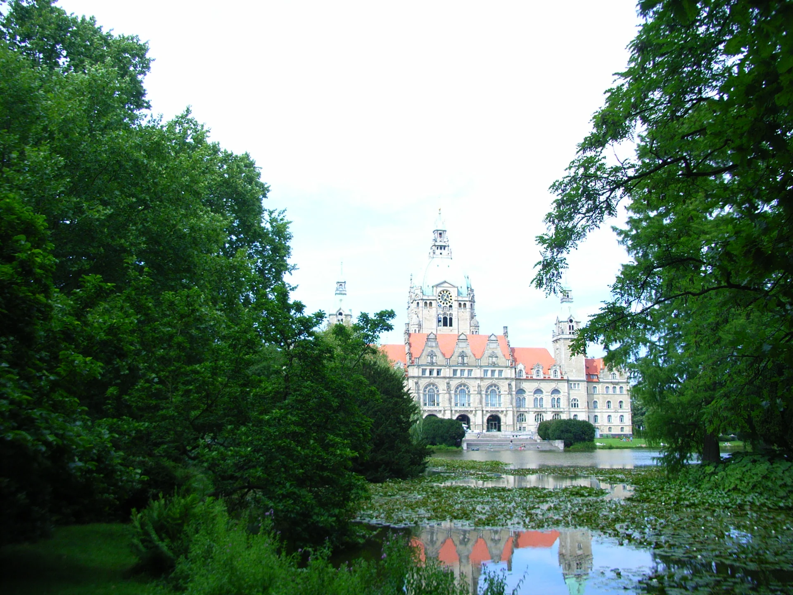
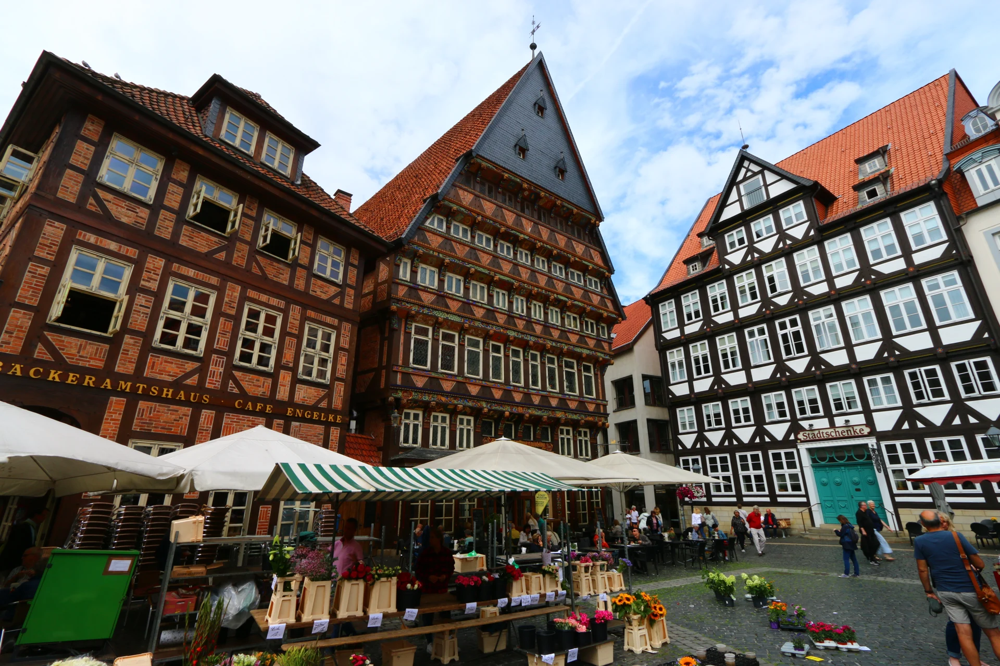

01 — HANNOVER
Ганновер
ГОРОД ДЛЯ НЕСПЕШНЫХ РАЗГОВОРОВРатуша, отражения в воде и прогулка по Машпарку. Можно свернуть в старый город, а потом — на кофе.
ГАННОВЕР · ХИЛЬДЕСХАЙМ
Я Даник. Днём — айтишечка,
в свободное время — ваш гид по красивым
уголкам Нижней Саксонии.
Без спешки. С кофе. С хорошей компанией.


Есть места, которые
хочется кому-то показать.
ВЫБИРАЕМ НАСТРОЕНИЕ
Маршрут найдётся.
Осталось выбрать компанию.
Ратуша, отражения в воде и прогулка по Машпарку. Можно свернуть в старый город, а потом — на кофе.
Фахверковые домики, уютная Рыночная площадь и детали, ради которых хочется остановиться. Здесь особенно легко забыть про время.
С тебя — удобное время. С меня — маршрут и хорошее настроение.